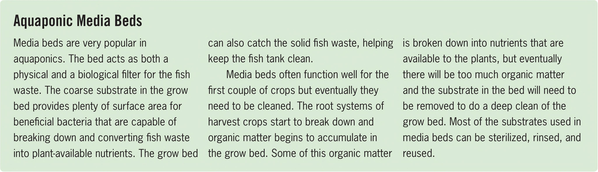

Aquaponic Media Beds Media beds are very popular in aquaponics. The bed acts as both a physical and a biological filter for the fish waste. The coarse substrate in the grow bed provides plenty of surface area for beneficial bacteria that are capable of breaking down and converting fish waste into plant-available nutrients. The grow bed can also catch the solid fish waste, helping keep the fish tank clean. Media beds often function well for the first couple of crops but eventually they need to be cleaned. The root systems of harvest crops start to break down and organic matter begins to accumulate in the grow bed. Some of this organic matter is broken down into nutrients that are available to the plants, but eventually there will be too much organic matter and the substrate in the bed will need to be removed to do a deep clean of the grow bed. Most of the substrates used in media beds can be sterilized, rinsed, and reused. and cucumbers, but some aquaponics media beds are much larger and can easily handle large flowering crops. LOCATIONS Media beds can be designed for any location. The media bed in the following guide is great for indoors but could also be placed outdoors or in a greenhouse. Media beds placed outdoors may have some issues if there is a lot of rain— the reservoir may flood and the nutrients washed away— but the reservoir can easily be amended with fertilizer to return the EC to a target range. SUBSTRATE OPTIONS Expanded clay pellets, expanded shale, river stone, lava rock, aquarium gravel, and drainage gravel are just some of the substrate options in a media bed. Be sure to use substrate made from large particles that are pH neutral (avoid limestone). Always prewash any substrate used in a media bed. It is possible to use a very coarse coco coir (coco croutons), but it is not ideal. Coco holds more water than traditional media bed substrates, so the irrigation frequency will likely need to be reduced. Coco will trap more roots from harvest plants and cleanings may need to be more frequent. Coco also decomposes, so eventually it will need to be completely replaced. IRRIGATION METHODS The traditional method for irrigating a media bed is with fill and drain fittings. Both of the fittings are secured in the bottom of the grow bed. The fill fitting is flush, or nearly flush, with the bottom of the grow bed and the drain fitting is elevated to just slightly below the surface of the grow bed. During an irrigation cycle the water enters the grow bed through the fill fitting and nutrient solution drains back into the reservoir through the drain fitting. The drain fitting prevents the grow bed from overflowing. When the irrigation cycle ends, the nutrient solution drains from the media bed by flowing back into the reservoir through the fill fitting. There are a couple of other popular ways to irrigate a media bed, including bell siphons and U-siphons, but for beginners I'd recommend sticking to traditional fill and drain fittings. HYDROPONIC GROWING SYSTEMS 93
